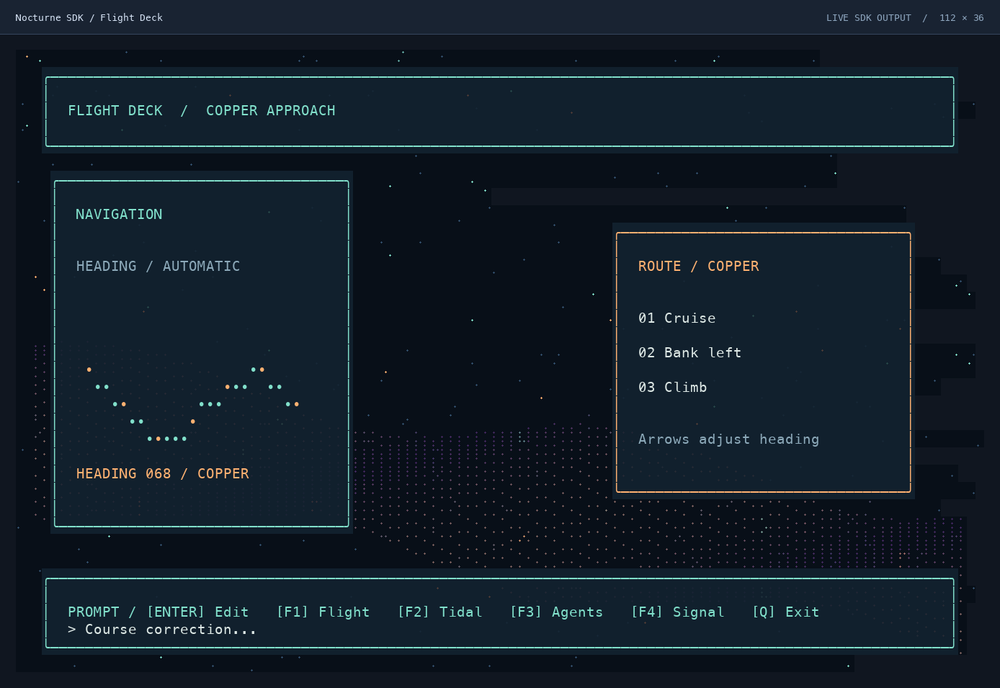
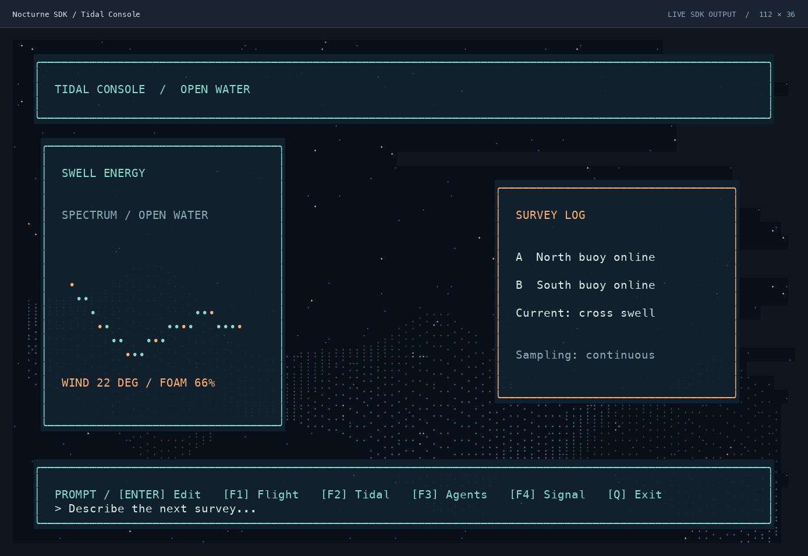
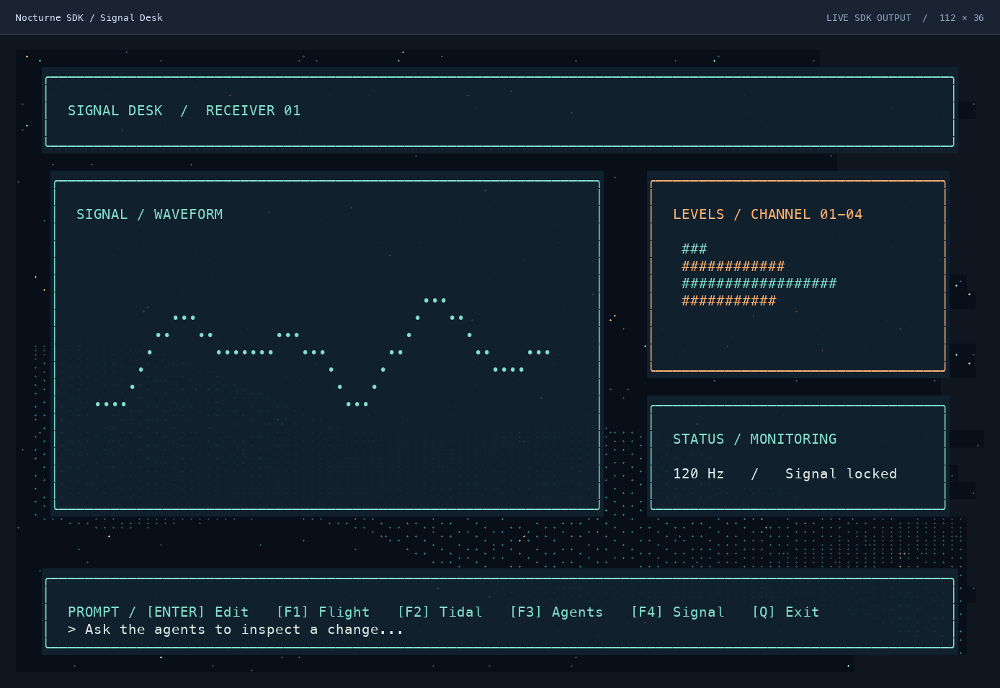
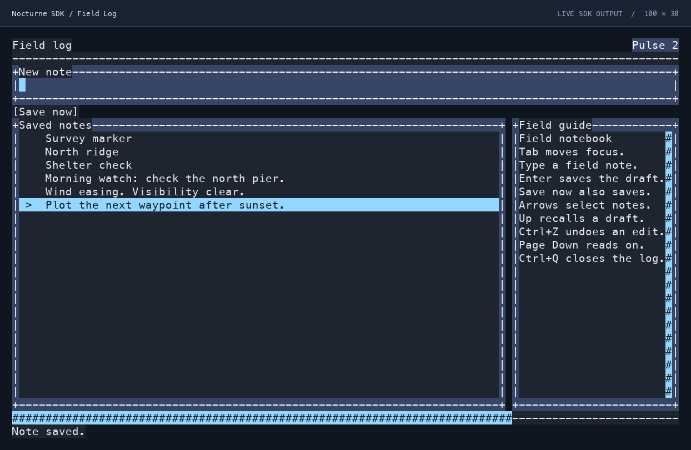
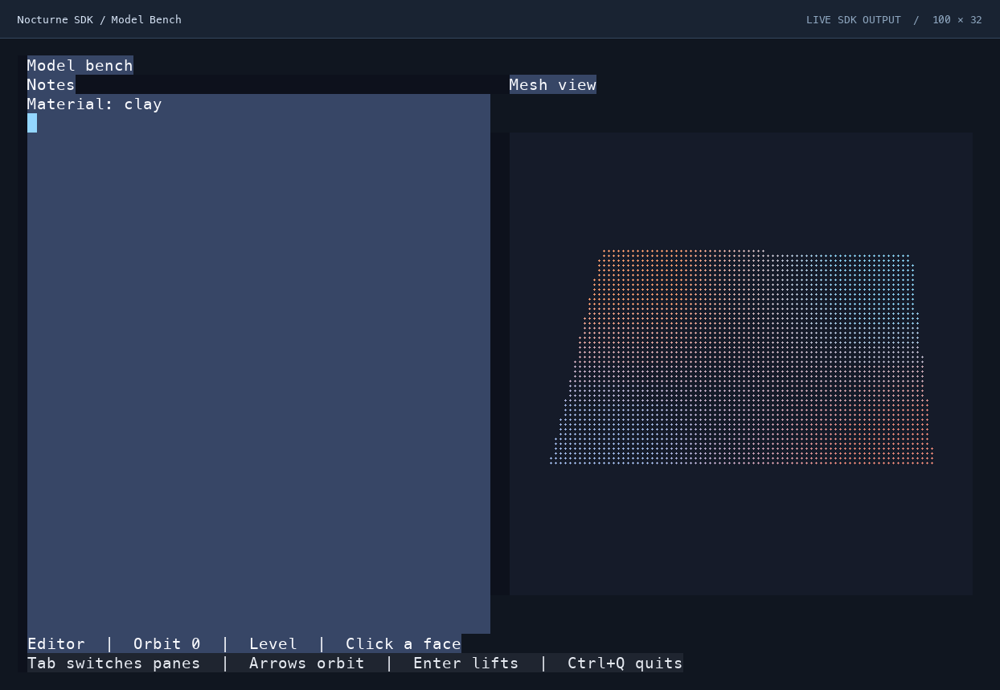

Orbital Review
Scripted agents stream their updates over an oblique starfield. The native example accepts prompts and approval decisions and lets you select a file to open its diff.
NOCTURNE SDK
Color terminal captures from running Nocturne examples. Captured in tmux on macOS arm64.
Build the scene gallery · Visual coverage and RC5 inventory
Scripted agents stream their updates over an oblique starfield. The native example accepts prompts and approval decisions and lets you select a file to open its diff.

Navigation and route panels over an animated subcell scene. Arrow keys change the heading.

An analytic water-wave sample field beneath translucent survey instruments.

Animated waveform and level displays with a status panel and prompt.

Compose, save, and select notes in an interactive terminal screen. Build Field Log

Render a spatial mesh on a character grid. Build Model Bench
Independent paths and a progress track. Animated PNG · Still frame